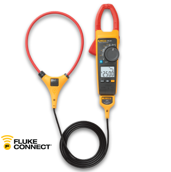
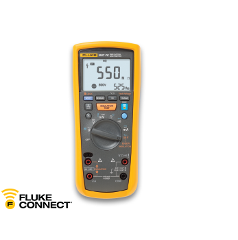
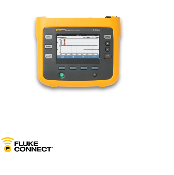

Sichern Sie sich Ihr Neugerät aus der 370 Fluke Connect Serie – und erhalten Sie 40 Euro zurück.
Sichern Sie sich Ihr Neugerät aus der 370 Fluke Connect Serie – und erhalten Sie 40 Euro zurück.
Die Vorteile der Fluke 370 FC Serie:
- Ermöglicht die Durchführung von Messungen auf engstem Raum mit der flexiblen iFlex® Stromzange
- Protokollierung und Trendmessungen zur Erkennung von intermittierenden Fehlern
- Drahtlose Übertragung der Ergebnisse mit der Fluke Connect® Measurement App
- Die von Fluke entwickelte Einschaltstrom-Messtechnik filtert Rauschen heraus und erfasst den Einschaltstrom genau so, wie ihn die Schutzeinrichtung sieht
- Sicherheitsspezifikation gemäß Überspannungskategorien CAT IV 600 V, CAT III 1.000 V
| Fluke Gerät* | Preis | ArtikelNr |
|---|---|---|
| Fluke 374 FC | € 349.99 | 4696001 |
| Fluke 375 FC | € 419.99 | 4695932 |
| Fluke 376 FC | € 479.99 | 4695861 |
* Aktion nur für die folgende Produkte möglich: Alle alten Fluke-Stromzangen – Neugeräte: FLUKE-374 FC, FLUKE-375 FC, FLUKE-376 FC

Sichern Sie sich Ihr Neugerät Fluke 1587 FC
Isolationstester – und erhalten Sie 75 Euro zurück.
Sichern Sie sich Ihr Neugerät Fluke 1587 FC
Isolationstester – und erhalten Sie 75 Euro zurück.
Die Vorteile des Fluke 1587 FC Isolationstester:
- Zwei leistungsstarke Messgeräte vereint in einem kompakten, portablen Werkzeug: digitales Isolationsmessgerät und voll ausgestattetes Echteffektiv-Digitalmultimeter
- Historische Aufzeichnungen und Trendanalysen mit der Fluke Connect® Measurement App
- Drahtlose Übertragung der Ergebnisse mit der Fluke Connect® Measurement App. Mit Unterstützung von Fluke Connect Asset Software (wird seperat verkauft), wird Ihnen darüber hinaus ein komplettes Instandhaltungssystem ermöglicht
| Fluke Gerät* | Preis | ArtikelNr |
|---|---|---|
| Fluke 1587 FC | € 749.99 | 4691215 |
| Fluke 1587/MDT FC | € 999.99 | 4692716 |
| Fluke 1587/i400 FC | € 799.99 | 4692725 |
* Aktion nur für die folgende Produkte möglich: Eintauschbare Altgeräte: FLUKE-1503, FLUKE-1507, FLUKE-1577, FLUKE-1587 - Neugeräte: FLUKE-1587FC, FLUKE-1587/ MDT FC, FLUKE-1587/I400 FC, FLUKE-1587 FC/RC, 1587KIT/62MAX+FC.

Sichern Sie sich Ihren neuen dreiphasigen Power Logger 1736
und 1738– und erhalten Sie 450 Euro zurück.
Sichern Sie sich Ihren neuen dreiphasigen Power Logger 1736
und 1738– und erhalten Sie 450 Euro zurück.
Unterschiede im Vergleich zu 1735:
- Unterstützt den Netzqualitätsstandard EN 50160
- Kompaktere Bauform, leichter, größeres Display Passt problemlos in kleine Schaltschränke - lässt sich bequemer tragen und die Messwerte können fehlerfrei abgelesen und überprüft werden
- Größerer Speicher Speichert mehr Protokollierungssitzungen - die Daten brauchen vor Beginn der nächsten Protokollierungssitzung nicht heruntergeladen zu werden
- Mehr Messfunktionen Über 500 Parameter zu jeder Zeit - keine Sorgen, ob Sie den richtigen Messmodus ausgewählt haben
- Einfacher zu bedienen Einfachere Einrichtung, bessere Bedienoberfläche, weniger Fehler, Download ohne einen PC direkt vor Ort - USB-Flash-Laufwerk oder drahtlos
- Stromversorgung aus dem Stromkreis, an dem die Messung durchgeführt wird. Keine Suche nach Steckdosen oder Verlängerungskabeln
| Fluke Gerät* | Preis | ArtikelNr |
|---|---|---|
| Fluke 1736/EUS | € 3999.99 | 4534519 |
| Fluke 1736/B | € 3799.99 | 4563561 |
| Fluke 1738/EUS | € 4799.99 | 4563577 |
| Fluke 1738/B | € 3999.99 | 4588378 |
* Aktion nur für die folgende Produkte möglich: Eintauschbare Altgeräte: FLUKE-1735 – Neugeräte: FLUKE-1736, FLUKE-1738